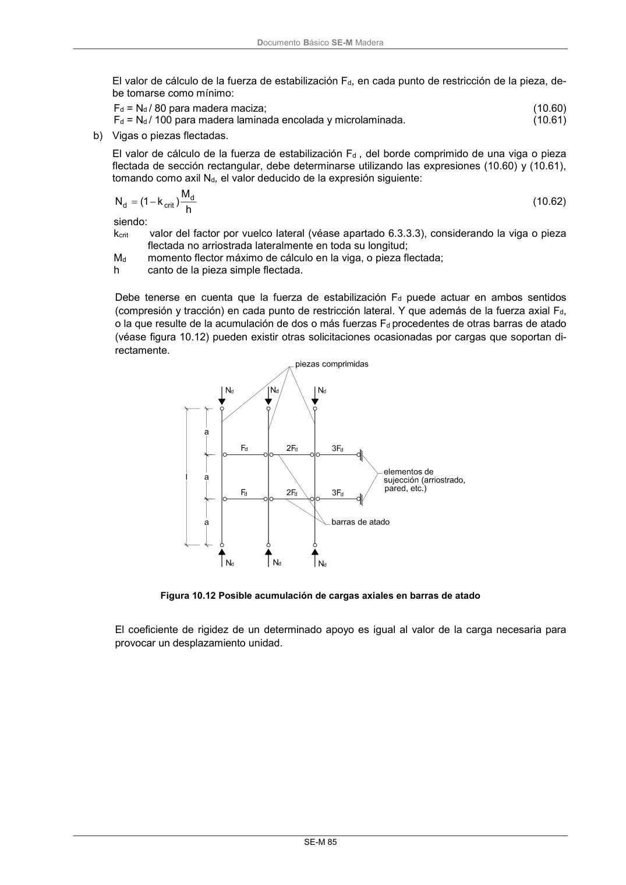

DB-SE-M · Fragmento de PDF p90 · versión 2019-12-20 · capa oficial
Formatos: JSON compacto · Markdown · PDF fuente
Ámbito del documento · texto del ámbito · documento y tablas
ID técnico a0153 · PDF pág. 90-92 · jerarquía no validada por persona · no es capítulo: sin_linea_de_encabezado · padre: raíz · literal original en el contenido: «10.5 Arriostramientos 10.5.1 Piezas simples con restricciones intermedias»
10.5 Arriostramientos 10.5.1 Piezas simples con restricciones intermedias 10.5.1 Piezas simples con restricciones intermedias 1 En piezas simples comprimidas, que requieran restricciones laterales intermedias a intervalos a (véase figura 10.11), las desviaciones iniciales de la forma recta entre los puntos de restricción de- ben tomarse, para su cálculo, como a/500 en elementos de madera laminada encolada y de madera microlaminada y a/300 en otras piezas. 2 En casos de peritación se podrán admitir desviaciones inciales mayores. 3 Cada restricción intermedia debe aportar un coeficiente de rigidez mínimo C definido por la expresión siguiente: a N k C d s (10.58) siendo: Nd valor medio de cálculo de la solicitación axil de compresión en la combinación más desfavo- rable; a separación entre secciones arriostradas; ks factor de modificación deducido de la expresión: ks = 2(1+cos /m) (10.59) donde: m número de vanos de longitud a. Figura 10.11 Piezas simples con restricciones laterales intermedias. 4 Como consecuencia de la restricción aportada por las barras de atado se genera en los puntos de arriostramiento una fuerza de estabilización, Fd , definida de la manera siguiente: a) Soportes o piezas comprimidas. DocumentoBásico SE-M Madera SE-M 85 El valor de cálculo de la fuerza de estabilización Fd, en cada punto de restricción de la pieza, de- be tomarse como mínimo: Fd = Nd / 80 para madera maciza; (10.60) Fd = Nd / 100 para madera laminada encolada y microlaminada. (10.61) b) Vigas o piezas flectadas. El valor de cálculo de la fuerza de estabilización Fd , del borde comprimido de una viga o pieza flectada de sección rectangular, debe determinarse utilizando las expresiones (10.60) y (10.61), tomando como axil Nd, el valor deducido de la expresión siguiente: h M ) k 1 ( N d crit d (10.62) siendo: kcrit valor del factor por vuelco lateral (véase apartado 6.3.3.3), considerando la viga o pieza flectada no arriostrada lateralmente en toda su longitud; Md momento flector máximo de cálculo en laviga, opieza flectada; h canto de lapieza simple flectada. Debe tenerse en cuenta que la fuerza de estabilización Fd puede actuar en ambos sentidos (compresión y tracción) en cada punto de restricción lateral. Y que además de la fuerza axial Fd, o la que resulte de la acumulación de dos o más fuerzas Fd procedentes de otras barras de atado (véase figura 10.12) pueden existir otras solicitaciones ocasionadas por cargas que soportan di- rectamente. Figura 10.12 Posible acumulación de cargas axiales en barras de atado El coeficiente de rigidez de un determinado apoyo es igual al valor de la carga necesaria para provocar un desplazamiento unidad. DocumentoBásico SE-M Madera SE-M 86 Figura 10.13


PDF fuente redistribuible: copia fiel enlazada en esta página (SHA256 verificado).